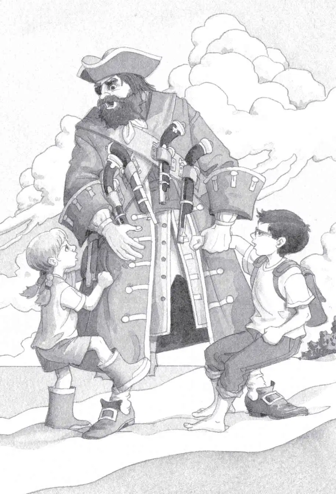
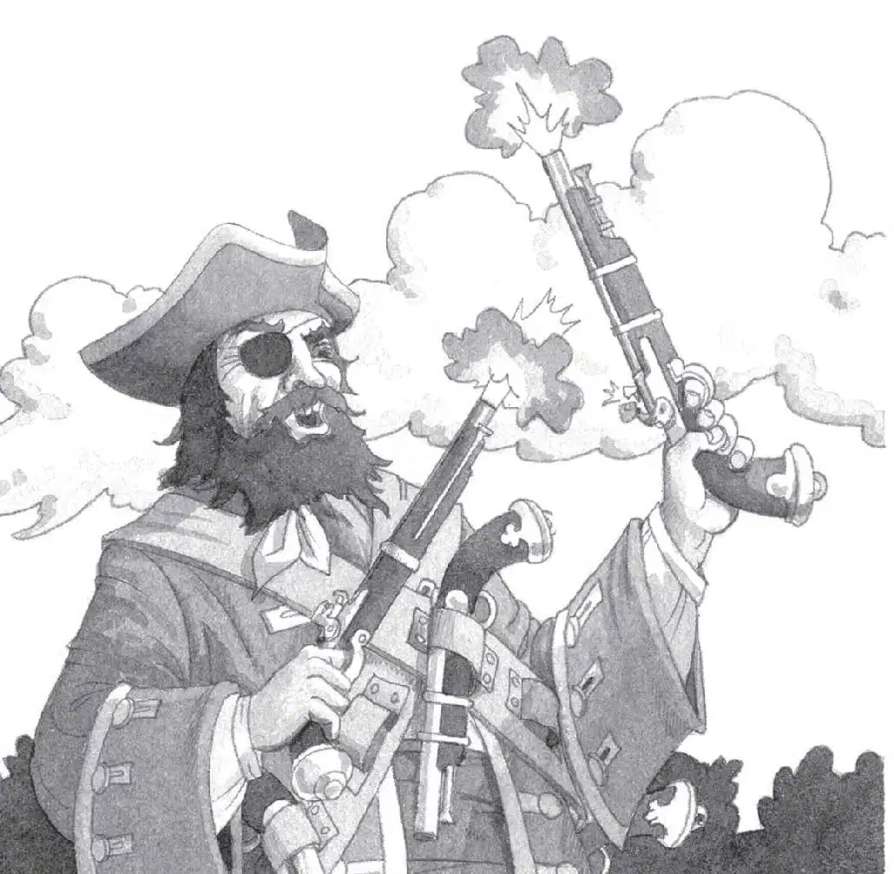

Jack started to run across the hot sand. He ran as fast as he could.
But the pirates ran faster.
Before Jack knew it, the biggest pirate had grabbed him!
Jack struggled. But the pirate had huge, strong arms. He held on to Jack and laughed a mean, ugly laugh. He had a shaggy black beard. A patch covered one eye.
Jack heard Annie yelling. He saw her coming down the rope ladder.
“Stay where you are!” Jack shouted.
But Annie kept coming. “Leave him alone, you bully!” she cried.
The other two pirates laughed meanly. They were dirty and ragged.
Annie charged up to the biggest pirate. “Let him go!” she said. She hit the pirate with her fist and kicked him.
But the pirate just growled. Then he grabbed her, too. And with his giant hands, he held Jack and Annie as if they were two kittens.
“No one escapes Cap’n Bones!” he roared. His breath was terrible.
“Let go!” Annie shouted into his face.
But Cap’n Bones just smiled. All his teeth were black.
Annie fell silent.
Cap’n Bones laughed loudly. Then he turned to the other two.

“Find out what’s in their house, you dogs,” he said.
“Aye, aye, Cap’n!” they answered. And they started up the ladder to the tree house.
“What do you spy, Pinky?” shouted Cap’n Bones.
“Books, Cap’n!” Pinky shouted down.
“Aghh, books,” growled Cap’n Bones. He spit on the sand. “I want gold, you dogs!”
“Dogs are nicer than you,” said Annie.
“Shhh,” said Jack.
“What about you, Stinky?” Cap’n Bones roared.
“Just books, Cap’n!” shouted Stinky.
“Aghh, books,” said Cap’n Bones. He spit on the sand again. “I hate books! Keep looking, dogs! Find me something good!”
Cap’n Bones grabbed Jack’s backpack.
“What’s in here?” he said.
“Nothing—” Jack quickly opened the pack. “Just paper, a pencil, a book.”
“Another book!” roared Cap’n Bones. “That’s vile booty!”
A gleeful shriek pierced the air.
Cap’n Bones froze. “What’s that?” he shouted.
“Look, Cap’n! Look!”
Pinky leaned out the tree house window. He held the medallion. It glimmered in the sunlight.
Oh brother, thought Jack.
“Throw it down!” cried Cap’n Bones.
“It’s not yours!” shouted Annie.
Cap’n Bones dropped Jack and Annie. He caught the medallion as it fell.
“Gold! Gold! Gold!” he cried. Cap’n Bones threw back his head and laughed horribly.
He grabbed two of his pistols. He shot them into the air. Pinky and Stinky howled like wolves.
